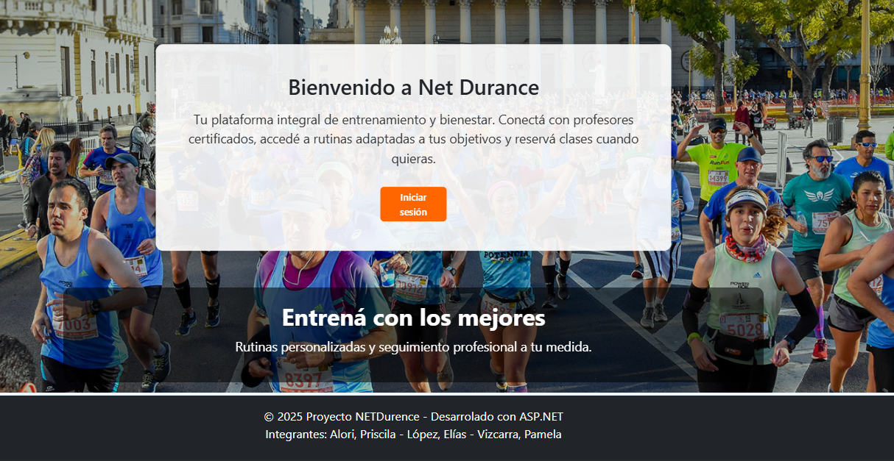
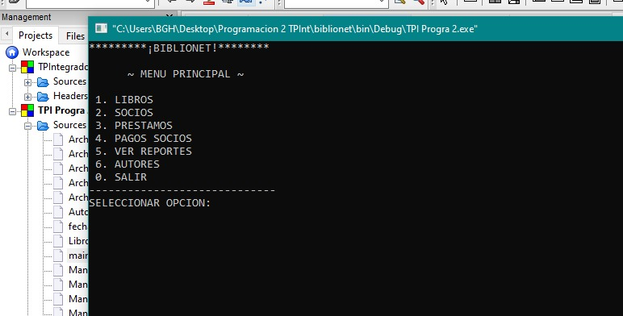
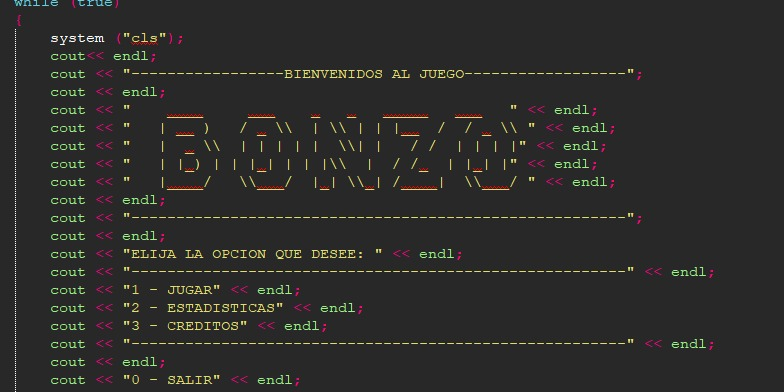
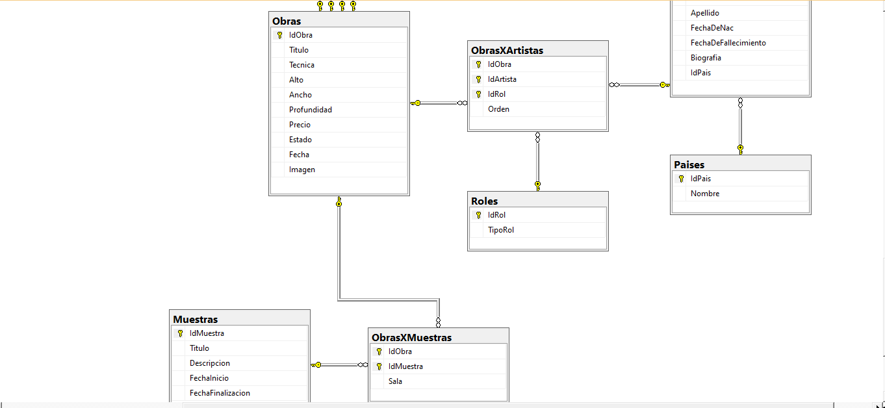

Hola, soy
Priscila Alori
Desarrolladora en formación
Estudiante de programación, dando mis primeros pasos en proyectos academicos, con experiencia en .NET, Java, SQL y Android, más los lenguajes pertinentes a el desarrollo de esta presentacion. Me gusta mucho el análisis funcional de los sistemas, y me siento cómoda trabajando en equipo. Hoy estoy en la búsqueda de nuevas formaciones y conocimientos de la mano de profesionales del área.

Sobre mí
Soy estudiante de la Tecnicatura Universitaria en Programación en la UTN y profesora de Educación Física. Me encuentro desarrollando proyectos académicos y personales con tecnologías como C#, .NET, SQL, HTML, CSS y JavaScript, enfocándome en seguir creciendo como desarrolladora backend. Mi experiencia como profesora de natación y guardavidas me permitió desarrollar habilidades de trabajo en equipo, comunicación, responsabilidad y resolución de problemas, competencias que hoy aplico también en el desarrollo de software. Actualmente continúo ampliando mis conocimientos mediante proyectos personales y nuevas tecnologías, con el objetivo de incorporarme a un equipo de desarrollo donde pueda seguir aprendiendo y aportar valor.
Tecnologías
Lenguajes
Proyectos

Sistema de Entrenamiento
Aplicación web desarrollada para gestionar profesores, deportistas, rutinas y ejercicios utilizando ASP.NET, C# y SQL Server.
Ver repositorio

Aplicación Android
Aplicación desarrollada en Android Studio con Java como proyecto académico.
Proyecto académico
Biblionet
Sistema de gestión de biblioteca desarrollado en C++, implementando operaciones ABML sobre archivos.
Proyecto académico
Bonzo
Juego de consola desarrollado en C++ aplicando funciones y modularización.
Proyecto académico
Sistema de Base de Datos
Diseño e implementación de una base de datos relacional utilizando SQL Server.
Ver repositorioContacto
Gracias por visitar mi portfolio. Si te interesa mi perfil o querés ponerte en contacto conmigo, podés encontrarme en: